ISBN nuk është bazë të dhënash
Pse ISBN ndihmon në identifikimin e librave por nuk zëvendëson sistemet e metatëdhënave, dhe si funksionon zinxhiri i kërkimit të metatëdhënave në projektin Let Books.
Kur mbani në dorë një libër të shtypur, barkodi në kopertinën e pasme është identifikuesi më i dukshëm që ai mbart. Ai identifikues është ISBN — Numri Standard Ndërkombëtar i Librit. Në katalogët e bibliotekave, dyqanet online dhe sistemet e metatëdhënave, shpesh funksionon si një çelës i bazës së të dhënave. Por ISBN nuk është një bazë të dhënash dhe trajtimi i tij si i tillë çon në probleme reale në procesin e dhurimit të librave.
Çfarë është ISBN në të vërtetë
ISBN është një identifikues unik i caktuar për një botim specifik të një libri të botuar. Standardi aktual, ISBN-13, përdor 13 shifra me një shifër kontrolli për zbulimin e gabimeve. Formati më i vjetër ISBN-10 gjendet ende në librat e botuar para vitit 2007.
ISBN identifikon botimin, jo veprën. Për shembull, botimi i dytë dhe i tretë i të njëjtit tekst shkollor kanë ISBN të ndryshëm. Një libër me kopertinë të fortë dhe ai me kopertinë të butë të së njëjtës vepër kanë ISBN të ndryshëm. Një përkthim në anglisht dhe botimi origjinal frëngjisht kanë ISBN të ndryshëm.
Kjo është precizion i dobishëm — por vjen me kufizime të rëndësishme.

ISBN identifikon metatëdhënat e botimit në të majtë. Kopja fizike në të djathtë — gjendja, provenienca, vendndodhja e ruajtjes, statusi i dhurimit, fotot — gjurmohet veçmas në modelin domenor të Let Books. Të dyja janë të lidhura por nuk janë e njëjta gjë.
Çfarë ISBN nuk mund të bëjë
Jo çdo libër e ka një të tillë
Librat e botuar para vitit 1970, vetëbotimet, materialet akademike me tirazh të kufizuar dhe librat nga botues të vegjël shpesh nuk kanë fare ISBN. Në koleksionet e trashëgimisë akademike — lloji në të cilin ky projekt fokusohet — tekstet shkollore para vitit 1970, materialet e leksioneve dhe materialet e shtypura në nivel lokal janë të zakonshme dhe të vlefshme.
ISBN nuk përshkruan gjendjen
Një bibliotekë dëshiron të dijë nëse një kopje është e dëmtuar nga uji, e shënuar ose i mungojnë faqe. ISBN nuk jep asnjë nga këto informacione. Identifikuesi është i njëjtë për një kopje të pacenuar dhe për atë që ka qëndruar në një bodrum të lagësht për njëzet vjet.
ISBN nuk përshkruan proveniencën
E kujt ishte kjo kopje? A u rekomandua nga një profesor? A ka nënshkrimin e një pronari të mëparshëm ose një vulë biblioteke? Cila institucion e mbajti atë? ISBN hesht për të gjitha këto.
ISBN nuk përshkruan vendndodhjen
Për një projekt dhurimi librash, pyetja e dytë më e rëndësishme pas “çfarë është?” është “ku është?”. ISBN nuk ka përgjigje. Vendndodhja është një çështje logjistike fizike, e gjurmuar veçmas në hierarkinë e ruajtjes.
ISBN mund të jetë i gabuar ose i ripërdorur
Ekzistojnë ISBN të shtypur gabimisht. I njëjti ISBN mund të ripërdoret aksidentalisht nga botues të ndryshëm. OCR mund të lexojë gabimisht shifrat. Shifra e kontrollit kap gabimet e një shifre të vetme, por jo të gjitha.
Si trajton Let Books ISBN-in
docs/book-metadata.md përcakton një strategji praktike rezervë për kërkimin sipas ISBN-së. Dokumenti gjithashtu thotë se ky rrjedh funksionon në demon alfa aktuale, ndërsa shërben si model për aplikacionin e plotë të ardhshëm:

- Normalizo dhe verifiko ISBN-in. Hiq hapësirat dhe vizat, X-in ktheje në të madhe, verifiko shifrën e kontrollit.
- Kërko së pari Open Library përmes API-t publik.
- Nëse Open Library nuk kthen të dhëna të dobishme, kërko API-n e metatëdhënave të Let Books.
- Nëse asnjë ofrues nuk ka të dhëna, kthehu te regjistrimi manual.
Regjistrimi manual nuk bllokohet kurrë. Nëse të gjithë ofruesit dështojnë — qoftë për shkak të një gabimi rrjeti, kufizimi të shpejtësisë ose mungesës së vërtetë të të dhënave — përdoruesi mund të fusë manualisht titullin, autorin, botuesin dhe vitin dhe të vazhdojë katalogimin.
Zinxhiri i rënies është qëllimisht i thjeshtë. Nuk ka një pikë të vetme dështimi sepse asnjë ofrues nuk është i detyrueshëm. Çdo ofrues është opsional dhe i zëvendësueshëm në mënyrë të pavarur.
Referencat kanonike të depos për këtë zinxhir janë docs/book-metadata.md dhe AGENTS.md. Nëse një demo ose një ndërtim specifik i aplikacionit tashmë zbaton një pjesë të këtij rrjedhi, përmendeni këtë vetëm si status zbatimi, jo si dëshmi kryesore.
Pse kjo ka rëndësi për dhurimin e librave
Kur një dhurues katalogizon një koleksion librash akademikë, disa do të kenë ISBN dhe disa jo. Librat pa ISBN janë shpesh më interesantët — botime më të vjetra, materiale të botuara në nivel lokal, përmbledhje për lëndë specifike ose libra nga botues të ish-Jugosllavisë, identifikuesit e të cilëve nuk arritën kurrë në bazat globale të të dhënave.
Procesi i katalogimit nuk duhet të ndëshkojë dhuruesin për mungesën e ISBN-ve. Çdo veçori që funksionon me kërkimin e ISBN duhet të funksionojë edhe pa të: gjurmimi i vendndodhjes, ngarkimi i fotove, eksportimi në Excel, rishikimi në grup. ISBN është një lehtësi, jo një kërkesë.
Specifikimi i projektit, AGENTS.md: “Modeli duhet të lejojë të dhëna të paplota. ISBN nuk është i detyrueshëm.”
Si duket e ardhmja
Zinxhiri aktual i rënies do të zgjerohet me ofrues të rinj. Crossref, Wikidata, OpenAlex dhe COBISS janë kandidatë. Secili do të hyjë në të njëjtin zinxhir: provo sipas radhës, ruaj në cache në mënyrë agresive, bie në mënyrë të hijshme.
Por zinxhiri në vetvete nuk është qëllimi. Qëllimi është të arrihet nga një libër fizik në metatëdhëna të mjaftueshme që një bibliotekë të mund të vendosë nëse e dëshiron librin. ISBN ndihmon, por sistemi duhet të funksionojë kur ISBN nuk është i disponueshëm.
ISBN është një identifikues i dobishëm. Nuk është një bazë të dhënash.